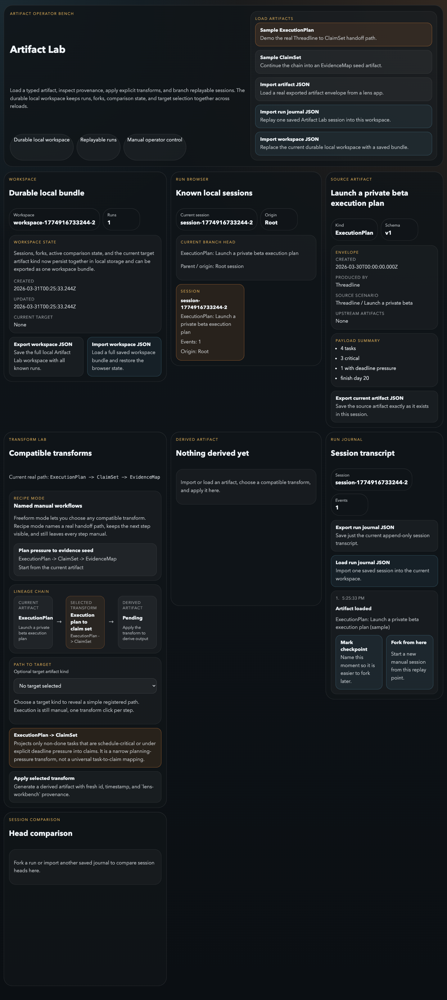
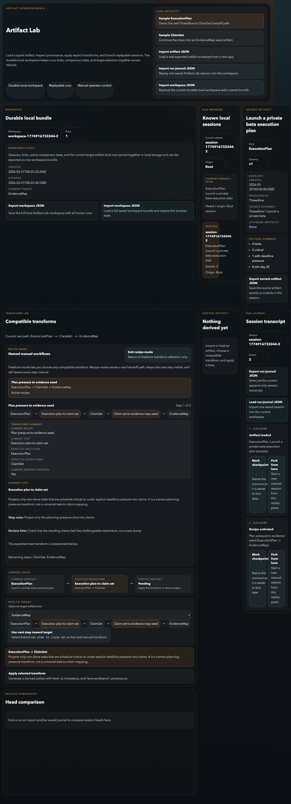
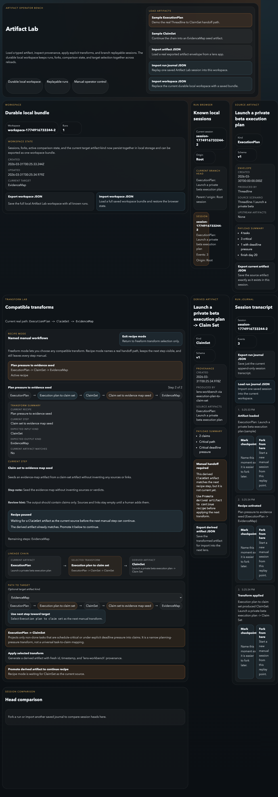
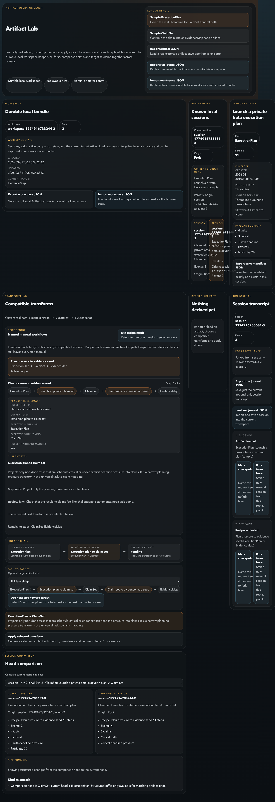

1. Durable workspace
The whole local workflow universe persists together.
`Artifact Lab` restores the active session, known runs, comparison target, and current
artifact goal on reload instead of forcing you to rebuild state from scattered files.

Workspace bundle
Sessions, forks, comparison state, and target selection live in one durable local
bundle.
Artifact first
The current source artifact is inspectable before any transform runs.
2. Recipe guidance
Named workflows are visible, but still manual.
Recipe mode turns one real path into a readable chain, preselects the expected next
transform, and keeps the remaining steps visible without becoming a workflow runner.

Real chain
`ExecutionPlan -> ClaimSet -> EvidenceMap` is encoded as an explicit, inspectable
path.
No hidden execution
The recipe only guides the next step. The operator still applies every transform by
hand.
3. Manual handoff
Derived artifacts stay visible until a human promotes them.
After a transform runs, the result becomes a pending derived artifact. The app makes
the seam obvious: export it, inspect it, or promote it to continue the recipe.

Fresh provenance
The transformed artifact gets a new id, timestamp, and explicit transform provenance.
Manual seam
Promotion is a deliberate operator action, not a hidden state transition.
4. Replay and forks
Runs are replayable transcripts, and forks stay legible.
The session transcript records what actually happened. Any event can become a new run
origin, which makes branching explicit before there is any merge or orchestration layer.

Fork browser
Known runs and their ancestry stay in one workspace, so branching is easy to inspect.
Transcript over magic
The journal records what the human did, and replay reconstructs state deterministically.